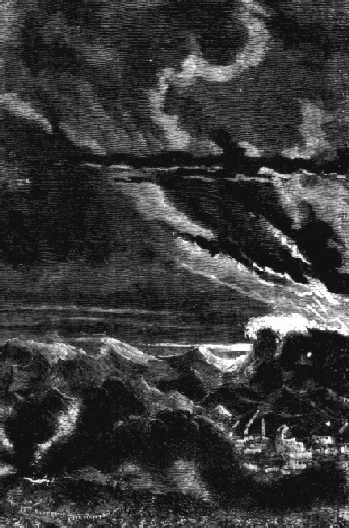
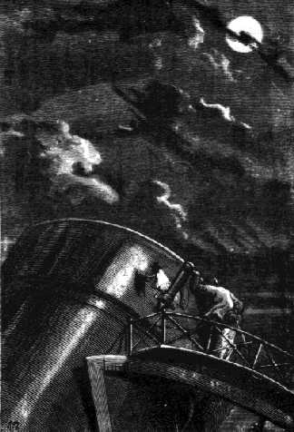

Capítol XXVII
TEMPS ENNUVOLAT
Al moment en què el feix incandescent s'enlaira devers el cel a una altura prodigiosa, aquell esclat de flames il·luminà tota la Florida, i, durant un instant incalculable, el dia substituí la nit en una considerable extensió del país. L'immens plomall de foc fou albirat a centenars de milles del mar, tant del golf com de l'Atlàntic, i més d'un capità de vaixell hi hagué que anotà en el llibre de bord l'aparició d'aquell gegantí meteor.

Efectes de la deformació
La detonació del Columbiad va anar seguida d'un vertader terratrèmol.
La Florida va sentir-se trontollada fins a les estranyes. Els gasos de la pólvora,
dilatats per la calor, rebutjaren amb una incomparable violència les
capes atmosfèriques, i aquell huracà artificial, cent vegades
més ràpid que l'huracà de les tempestats, passà
com una tromba enmig dels aires.
Ni un espectador no va restar dempeus; homes, dones, criatures, tots caigueren
estesos com espigues sota la tempesta. Hi hagué un tumult indicible,
un gran nombre de persones greument ferides, i J.-T. Maston, que, contra tota
prudència, estava massa a prop del canó, es veié llançat
a vint toeses al darrera i passà com una bala per damunt del cap dels
seus conciutadans. Tres-centes mil persones restaren momentàniament sordes
i com estupiditzades.

El director era al seu lloc
El corrent atmosfèric, després d'haver abatut campaments, capgirat
les cabanes, arrencat arbres en un radi de vint milles i tombat trens del ferrocarril
de Tampa, caigué sobre aquesta ciutat com una allau i destruí
un centenar de cases, entre altres l'església de Santa Maria i el nou
edifici de la Borsa, que s'esquerdà en tota la seva longitud. Alguns
dels bastiments del port, topant uns amb altres, s'enfonsaren, i una desena
de navilis ancorats en la rada vingueren a la costa, després d'haver
trencat llurs cadenes com si fossin fils de cotó.
Però el cercle d'aquelles devastacions s'estengué més lluny
encara, i més enllà dels límits dels Estats Units. L'efecte
del contracop, ajudat pels vents de l'Oest, fou experimentat sobre l'Atlàntic
a més de tres-centes milles de les costes americanes. Una tempesta fictícia,
una tempesta inesperada, que no havia pogut preveure l'almirall Fitz-Roy, caigué
sobre els seus navilis amb una violència sense parió. Alguns vaixells,
arreplegats per aquelles trombes espantoses i sense haver tingut temps de fer
les maniobres convenients, sotsobraren, entre altres el Childe-Harold, de Liverpool,
dolguda catàstrofe que per part d'Anglaterra esdevingué objecte
de les més vives reclamacions.
En fi, i per dir-ho tot d'un cop, per bé que el fet no tingué
altra garantia que l'afirmació d'alguns indígenes, mitja hora
després d'haver estat engegat el projectil, els habitants de Gorea i
de Sierra Leona, pretenien haver sentit una commoció sorda, darrer desplaçament
de les ones sonores que, un cop travessat l'Atlàntic, anaven a morir
a la costa africana.
Tornem a la Florida. Un cop passat el primer instant del tumult, els ferits,
els sords, en fi, la multitud entera, s'aixecà, i crits frenètics
de "Hurra Ardan!", "Hurra Barbicane!" i "Hurra Nicholl!"
pujaren fins als cels. Bastants milions d'homes, amb el nas enlaire i proveïts
de telescopis, d'ulleres de llarga vista o de binocles, interrogaren l'espai,
oblidant les contusions i les emocions per no preocupar-se només que
del projectil. Però en va el cercaven. No el podien albirar, i hagueren
de resignar-se a esperar els telegrames de Long's-Peak. El director de l'observatori
de Cambridge, senyor Belfast, es trobava al seu lloc en les Muntanyes Roqueres,
i era a ell, astrònom hàbil i perseverant, a qui les observacions
havien estat confiades.
Però un fenomen imprevist, si bé fàcil de preveure, i contra
el qual no es podia fer res, vingué de seguida a posar la impaciència
pública a dura prova.
El temps, tan bo fins aleshores, canvià sobtadament; el cel s'enfosquí
i es cobrí de núvols. ¿Podia ocórrer altra cosa
després del terrible desplaçament de les capes atmosfèriques,
i de la dispersió de l'enorme quantitat de vapors que procedien de la
deflagració de quatre-centes mil lliures de piroxil? Tot l'ordre natural
estava pertorbat. Això no havia de sorprendre, ja que, en els combats
al mar, s'ha vist sovint l'estat atmosfèric canviat sobtadament de resultes
de les descàrregues de l'artilleria.
L'endemà, el sol s'aixecà sobre un horitzó carregat d'espessos
núvols, feixuga i impenetrable cortina posada entre el cel i la terra,
i que, malauradament, s'estengué fins a les regions de les Muntanyes
Roqueres. Això fou una fatalitat. Un concert de protestes s'aixecà
de tot arreu del globus. Però la naturalesa se'n commogué poc
i, decididament, puix que els homes havien pertorbat l'atmosfera amb aquella
detonació, havien de sofrir-ne les conseqüències.
Durant el primer dia, tothom cercà la manera de penetrar el vel opac
dels núvols, però cadascú tingué prou feina per
ell, i a més tots s'equivocaren en posar les seves mirades vers el cel,
car, degut al moviment diürn del globus, el projectil necessàriament
feia via llavors per la línia dels antípodes.
Sigui el que es vulgui, quan la nit vingué a embolcallar la Terra, nit
impenetrable i profunda, quan la Lluna pujà sobre l'horitzó, fou
impossible de veure-la. S'hauria dit que defugia el desig que la veiessin els
temeraris que li havien disparat al damunt. No hi hagué lloc, doncs,
a cap observació, i els telegrames de Long's-Peak confirmaren aquest
enutjós contratemps.
Així i tot, si l'experiment havia reeixit, els viatgers partits l'1 de
desembre a les deu quaranta-set minuts i quaranta segons de la nit havien d'arribar
a la Lluna el dia 4, a les dotze de la nit1. Doncs, fins
a aquell dia, i com sigui que després de tot hauria estat molt difícil
l'observació d'un cos tan petit com era la bala en semblants condicions
atmosfèriques, no hi hagué altre remei que prendre paciència.
El dia 4 de desembre, de les vuit del vespre fins a mitjanit hauria estat possible
de seguir el rastre del projectil, que hauria aparegut com un punt negre
sobre el disc brillant de la Lluna. Però el temps seguia despietadament
cobert, ço que portà al paroxisme l'exasperació pública.
S'arribà a injuriar fins i tot la Lluna sols perquè no aparegué.
Trist capgirament del que són les coses en aquest món!
J.-T. Maston, desesperat, partí vers Long's-Peak. Volia observar per
ell mateix. No dubtava gens que els seus amics havien arribat al terme del seu
viatge, car no s'havia sentit dir enlloc que el projectil hagués caigut
sobre alguna illa o en algun punt dels continents terrestres, i J.-T. Maston
no admetia tampoc, ni per un instant, una caiguda possible en els oceans, tot
i que cobreixen les tres quartes parts de la Terra.
El 5, el temps seguia igual. Els grans telescopis del vell continent, com el
de Herschell, el de lord Rosse, el de Foucault, eren invariablement apuntats
sobre l'astre de les nits, car el temps era precisament magnífic a Europa,
però la relativa potència d'aquests instruments invalidava tota
útil observació.
El 6, encara el mateix temps. La impaciència rosegava les tres quartes
parts del globus. Hom va arribar a proposar els mitjans més absurds per
a dissipar els núvols acumulats a l'aire.
El 7, l'estat del cel semblà canviar un xic. Hom esperà, però
l'espera no fou de llarga durada, i al vespre uns núvols espessos impedien
veure la volta estelada.
Això era greu. En efecte, el dia 11, a les nou i onze minuts del matí,
la Lluna entrava en el seu quart minvant. Un cop passat aquest termini aniria
decreixent, i, encara que el cel fos serè, les probabilitats de l'observació
serien singularment reduïdes, car la Lluna presentaria llavors una porció
del seu disc que cada vegada aniria escurçant-se més fins a arribar
a ésser lluna nova, o sia que es pondria i sortiria amb el Sol, els raigs
del qual farien que esdevingués absolutament invisible. Llavors caldria
esperar fins al 3 de gener, a les dotze quaranta-quatre minuts per tornar a
ésser lluna plena i reprendre les observacions.
Els diaris publicaven aquestes consideracions fent-hi mil comentaris i no amagaven
al públic que havia de carregar-se d'una santa paciència.
El 8, res. El 9, el Sol sortí un instant com per mofar-se dels americans.
El van xiular, i ell, ferit davant d'una tal acollença, va mostrar-se
molt gasiu dels seus raigs.
El 10, cap canvi. A J.-T. Maston, li faltà poc per a tornar-se boig;
inspirà alguns temors el cervell d'aquest digne home, tan ben conservat
fins aleshores en el seu crani de gutaperxa.
Però l'11, una d'aquelles espantoses tempestats pròpies de les
regions intertropicals es va desencadenar a l'atmosfera. Forts vents de l'Est
escombraren els núvols amuntegats des de feia tant de temps, i al vespre,
el disc mig rosegat de la pàl·lida viatgera de les nits avançava
majestuosament per entre les nítides constel·lacions del cel.
1. Ací
convé fer remarcar un error o una discrepància de dades, si bé
ja apareixen rectificades pel mateix Juli Verne en el text de la segona part
de la novel·la.
L'error no és altre que d'assenyalar la dada de l'arribada dels expedicionaris
a la Lluna per al dia 4 de desembre en lloc del 5, havent partit de la Terra
el dia 1, a les deu quaranta-set minuts del vespre. En efecte, si se suma la
diferència que va d'aquesta hora fins a les dotze de la nit amb el total
obtingut de multiplicar vint-i-quatre hores pels quatre dies següents de
viatge per l'espai de la bala, veurem que la durada del trajecte de la Terra
a la Lluna per al projectil de Stone's-Hill és necessàriament
de noranta-set hores i tretze minuts, o sia el temps indicat per l'observatori
de Cambridge en la seva primera comunicació al Gun-Club. Consegüentment,
la seva arribada al continent lunar serà el 5 de desembre al punt de
la mitjanit, i no el dia 4, com així es llegeix en diversos passatges
d'aquesta primera part de l'obra. (N. del T.)